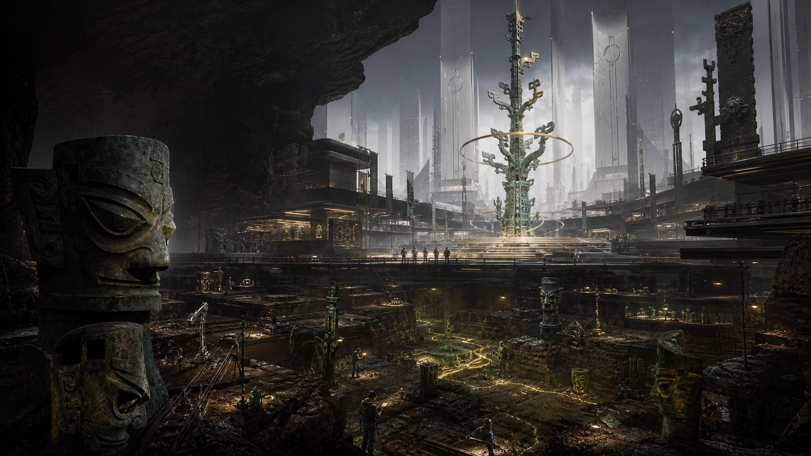

探索舞台空间
点击进入解锁声音，拖动舞台改变观看角度，滚轮缩放镜头。
CULTURAL IP / INTERACTIVE EXPERIENCE
让古老文明的角色，走进一场可以亲手唤醒的未来祭典。
这是一个可运行的虚拟舞台体验原型。项目从三星堆青铜面具、神树、青铜鸟、玉戈与太阳轮中提取角色线索，用五位表演者、灯光和声音，把静态 IP 设定延伸成一场互动演出。

WHAT TO EXPERIENCE / 可以体验什么
点击进入解锁声音，拖动舞台改变观看角度，滚轮缩放镜头。
点击人物或下方角色图腾，切换对应章节、灯光与镜头。也可用键盘 1–5。
五位角色全部唤醒后自动合奏；也可点击“开启合奏”直接观看约 12 秒的演出。
DESIGN IDEA / 设计想法
五位角色分别承担引导、采样、解码、破界与融合的叙事任务。色彩与灯光让角色切换成为演出的章节变化；神树逐层点亮与太阳轮启动，构成最后的共同高潮。
默认界面保留轻量提示，让观众先看见舞台。想进一步探索时，可打开 Director Mode（导演模式），调整灯光、镜头、能量与氛围。